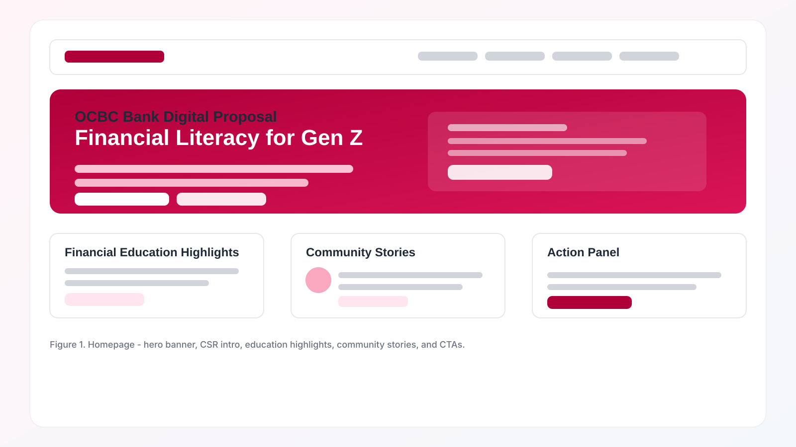
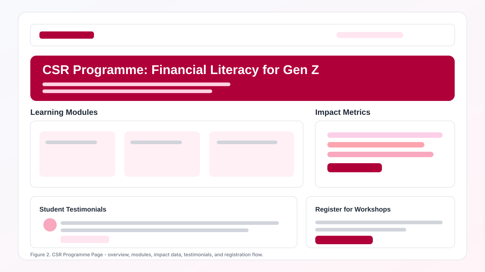
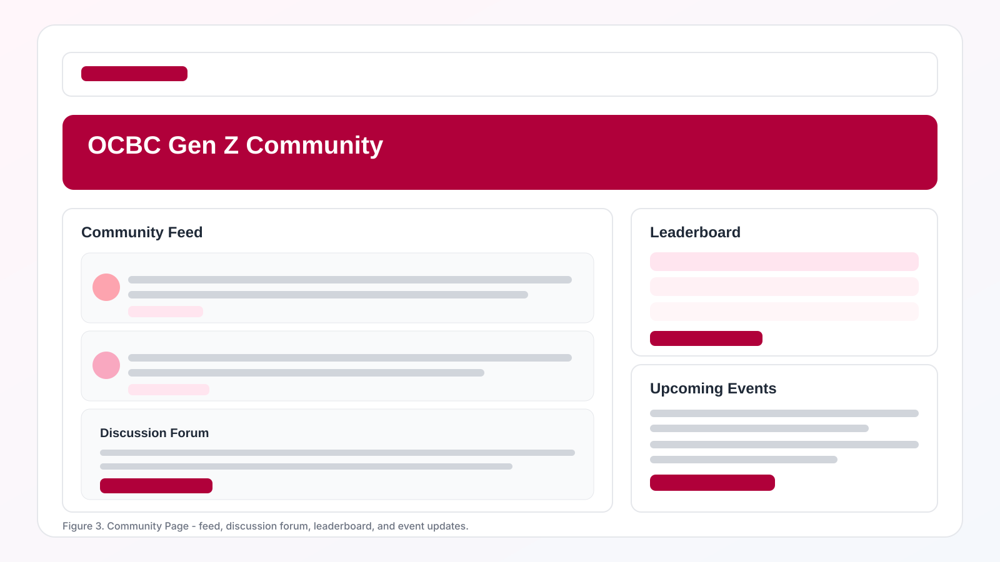
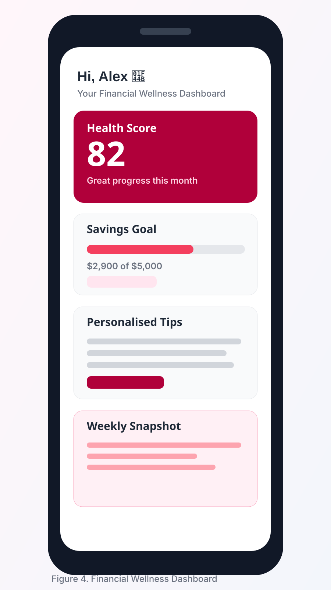
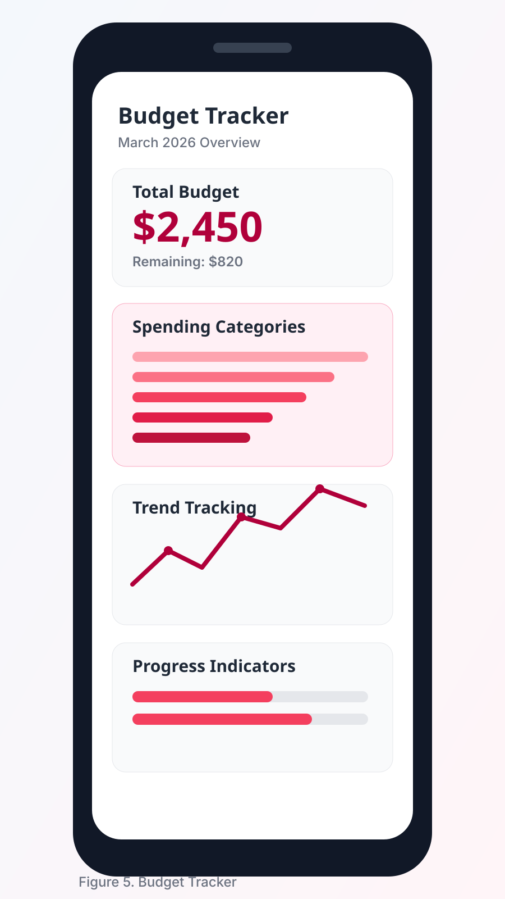
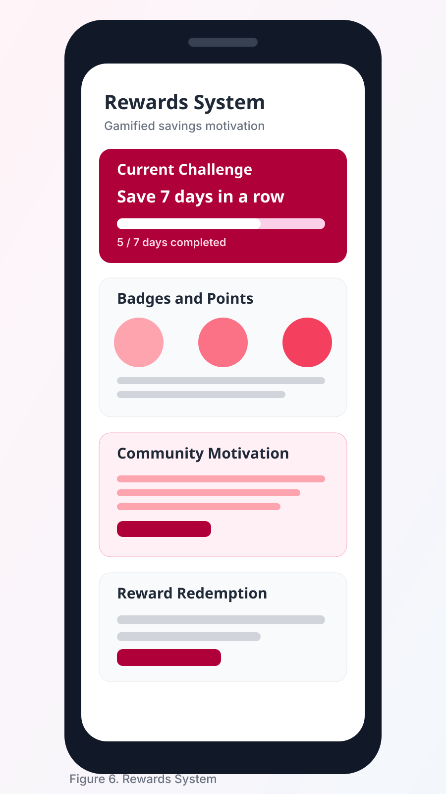

This proposal presents a redesigned digital presence for OCBC Bank focused on Millennials and Gen Z users. The central concept is a CSR initiative, Financial Literacy for Gen Z, which positions OCBC as a trusted partner in long-term financial wellbeing rather than only a provider of products. The project delivers two key outcomes: a refreshed website experience and a mobile app concept built around practical money education, interactive tools, and community engagement. Through clearer navigation, approachable content tone, and gamified participation features, the redesign aims to increase customer interaction, strengthen brand affinity, and improve overall usability across web and mobile touchpoints. The result is a modern, human-centred platform that supports financial confidence for younger users while aligning with OCBC’s credibility and growth objectives.
OCBC Bank Digital Proposal
Financial Literacy for Gen Z
Redesigning OCBC’s website and mobile app to improve financial education, humanise the brand, and strengthen engagement with younger users.
Executive Summary
Proposed New Online Presence
New CSR Initiative: Financial Literacy for Gen Z
OCBC should launch a CSR-led financial literacy programme aimed at helping young adults build stronger budgeting, saving, and investing habits.
Interactive Education Modules
Digestible lessons and real-life money scenarios for practical learning.
Workshops and Webinars
Student-friendly talks with financial coaches and peer-led sessions.
Savings Challenges and Tools
Guided challenges and templates to build day-to-day money discipline.
Long-Term Confidence
Progress pathways that encourage sustainable financial behaviour.
Humanising the OCBC Brand
The new digital presence should make OCBC appear more approachable, empathetic, and relevant to younger audiences.
Real Student Stories
Use testimonials to communicate authentic outcomes and trust.
Supportive Tone of Voice
Clear, friendly writing that reduces anxiety around financial topics.
Community-Oriented Branding
Show OCBC as an enabler of growth, not just a transaction provider.
Focus on Financial Wellbeing
Highlight confidence, habits, and wellbeing alongside product utility.
New Opportunities for Engagement
The redesign should create more touchpoints for interaction and participation.
Gamified Savings
Challenge-based milestones and streak rewards.
Leaderboard
Friendly community competition with healthy motivation.
Rewards System
Points, badges, and meaningful redemption paths.
Personalised Tips
Data-informed recommendations by spending profile.
Workshop Sign-Ups
One-click enrolment and event reminder flow.
Ongoing Participation
Habit loops that sustain long-term app and web usage.
Website Design Artefacts

Figure 1. Homepage
The homepage introduces the new CSR initiative through a strong hero banner, clear navigation, and accessible calls to action. Design focus: hero banner, CSR intro, financial education highlights, community stories, and CTA buttons.

Figure 2. CSR Programme Page
The CSR page explains the financial literacy initiative through learning modules, impact metrics, and student participation opportunities. Design focus: programme overview, modules, impact data, testimonials, and registration section.

Figure 3. Community Page
The community page builds engagement by showcasing user-generated stories, events, and discussion opportunities. Design focus: community feed, discussion forum, leaderboard, and upcoming events.
Mobile App Design Artefacts

Figure 4. Financial Wellness Dashboard
The dashboard gives users an instant view of financial health score, savings progress, and personalised tips in a clear card-based layout.

Figure 5. Budget Tracker
The budget tracker helps Gen Z users monitor spending categories, identify trends, and improve awareness through progress indicators.

Figure 6. Rewards System
The rewards system uses gamification with points, badges, and challenge progress to increase engagement and motivate positive financial behaviour.
Overall Design Justification
Principles of Design
Visual hierarchy, balance, contrast, and consistency structure the full experience.
Designing for Mobile and Web
Responsive behaviour and cross-platform consistency support smooth user transitions.
Designing for Usability
Clear navigation and intuitive information flow reduce cognitive load.
Writing for the Web
Concise copy, short paragraphs, and scannable headings improve readability.
Website Development
Structured information architecture and conversion-focused layout support growth.
App Development
Card-based interactions and gamified features align with Gen Z engagement patterns.
References
- Garrett, J. J. (2011). The elements of user experience: User-centered design for the web and beyond. Berkeley, CA: New Riders.
- Krug, S. (2014). Don't make me think, revisited: A common sense approach to web usability. Berkeley, CA: New Riders.
- Nielsen, J. (1994). Usability engineering. San Diego, CA: Academic Press.
- Norman, D. A. (2013). The design of everyday things: Revised and expanded edition. New York: Basic Books.
- Hamari, J., Koivisto, J., & Sarsa, H. (2014). Does gamification work? A literature review of empirical studies on gamification. Proceedings of the 47th Hawaii International Conference on System Sciences, 3025-3034.
- Fogg, B. J. (2009). A behavior model for persuasive design. Proceedings of the 4th International Conference on Persuasive Technology.
- Kaplan, A. M., & Haenlein, M. (2010). Users of the world, unite! The challenges and opportunities of social media. Business Horizons, 53(1), 59-68.
- Venkatesh, V., Thong, J. Y., & Xu, X. (2012). Consumer acceptance and use of information technology: Extending the unified theory of acceptance and use of technology. MIS Quarterly, 36(1), 157-178.
- Lemon, K. N., & Verhoef, P. C. (2016). Understanding customer experience throughout the customer journey. Journal of Marketing, 80(6), 69-96.
- Smith, A. (2015). U.S. smartphone use in 2015. Pew Research Center.